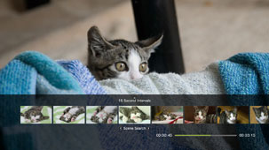
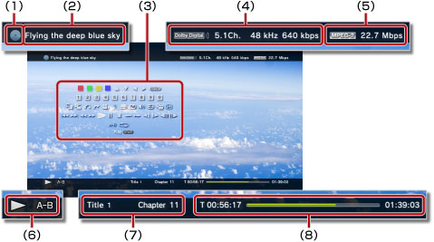

Video > Using the control panel
Using the control panel
Perform various operations using the on-screen control panel. The control panel can be displayed or hidden by pressing the  button.
button.
The icons displayed on this page are defined as follows:
 |
Video recorded on a read-only Blu-ray Disc (BD) |
|---|---|
 |
Video recorded on a rewritable BD |
 |
Video recorded in AVCHD format |
|
|
| Video recorded in VR Mode on DVD-R / DVD-RW | |
 |
Video files saved in the system storage |
 |
Video files saved on storage media* |
| * |
An appropriate USB adaptor (not included) is required to use storage media with some models. |
|---|
Notice
Some content may have playback conditions preset by the content developer. In such cases, some control panel items may not be available.
Red / green / blue / yellow icons


Perform the operations corresponding to the icon. Features assigned to the icon vary depending on the content.
Up / Down / Left / Right

Select an item.
Enter
Confirm the selected item.
Numeric Pad

Enter numbers.
Pop-Up Menu
View the pop-up menu.
Menu
View the menu.
Top Menu
View the top menu.
Return
Return to a specific point in the video.
Scene Search


Use this feature to view thumbnails that are created at certain time intervals. Select a thumbnail to start playing the video from that particular scene.

1. |
Use the |
|---|
 or
or  button to select the time interval to be used in creating the thumbnails.
button to select the time interval to be used in creating the thumbnails.2. |
Use the |
|---|
 or
or  button to select the thumbnail for the scene that you want to watch.
button to select the thumbnail for the scene that you want to watch.Hints
- The [Chapter] option can only be selected for video content that includes chapter information.
- The scene search feature cannot be used for video content that is less than one minute in length.
- The scene search feature cannot be used for some other types of video content.
- When you select a thumbnail, a preview of the scene is played for about 15 seconds.
Go To


Play from a specified chapter or time.
| Title X | Specify the title number. |
|---|---|
| Chapter X | Specify the chapter number. |
| XX:XX / XX:XX:XX | Specify the time. |
Hint
Depending on the video file, you may not be able to use (Go To).
Angle Options
Select one of the available viewing angles for content recorded with multiple angles.
Audio Options
Select one of the available audio options for content recorded with multiple audio tracks.
Subtitle Options
Select one of the available subtitle options for content recorded with multiple subtitle languages. Closed captions can be selected when content supports closed captions.
Hints
- To display closed captions, you must go to
 (Settings) >
(Settings) >  (Video Settings) > [Closed Captions] and set it to [On].
(Video Settings) > [Closed Captions] and set it to [On]. - The closed captions setting is available only on PS3™ systems sold in North America.
Subtitle Style Options
Select one of the available viewing options for content recorded with multiple subtitle styles.
Volume Control
Adjust the volume output level of content played under  (Video). Select one of nine levels.
(Video). Select one of nine levels.
Hints
- The sound may become distorted if the volume output level is set too high. If this happens, lower the volume output level.
- This setting may be disabled when using certain audio devices or when outputting certain types of audio.
AV Settings
Adjust settings related to the output of content played under (Video). The items that are displayed vary depending on the content.
| Frame Noise Reduction | Set to reduce fine noise. |
|---|---|
| Block Noise Reduction | Set to reduce mosaic-like block noise displayed on the screen. |
| Mosquito Noise Reduction | Set to reduce mosquito noise that appears on the edges of visual images. |
| Upscale | Set for upscaled output. The value that you set is reflected in [BD / DVD - Upscaler] under (Settings) > (Video Settings). |
| Video Output Format | Set the video output format. Select the video output format for playback of DVDs or BDs. The value that you set is reflected in [BD / DVD - Video Output Format (HDMI)] under (Settings) > (Video Settings). |
| Y Pb / Cb Pr / Cr Super-White | Set for super-white display. Super-white signal can now be output when playing a DVD, BD, or AVCHD disc. The value that you set is reflected in [Y Pb / Cb Pr / Cr Super-White (HDMI)] under (Settings) >  (Display Settings). (Display Settings). |
| RGB Full Range | Set for RGB full range display. The value that you set is reflected in [RGB Full Range] under (Settings) > (Display Settings). |
| Dynamic Range Control | Set the dynamic range control. Enable or disable your PS3™ system's dynamic range control feature while playing BDs and DVDs that produce Dolby Digital sound. The value that you set is reflected in [BD / DVD - Dynamic Range Control] under (Settings) > (Video Settings). |
| Audio Output Format | Set the audio output format. Select the audio output format for playback of DVDs or BDs. The value that you set is reflected in [BD / DVD - Audio Output Format (HDMI)] or [BD - Audio Output Format (Optical Digital)] under (Settings) > (Video Settings). |
Time Options
Select to display either the elapsed time or the remaining time for a title or a chapter. Items displayed vary depending on the content being played.
Screen Mode
Change the screen mode.
| Normal | Set to display the video to fit the screen size without changing proportions. |
|---|---|
| Zoom | Set to display the video at the full screen size without changing proportions. Portions of the video at the top and bottom or left and right are cut off. |
| Full Screen | Set to display the content on the entire screen by changing proportions and stretching the image vertically and horizontally. |
| Original | Set to display the video in its original size. |
Hint
Depending on the video file, it may not be possible to change the screen mode.
Change Icon
Change the icon (thumbnail image) associated with a video file. During playback of the video file, select (Change Icon) at the point when the image that you want to select as the icon is displayed.
Hints
- Depending on the video file, it may not be possible to change the icon.
- A video file shorter than two seconds cannot be used as an icon.
Delete
Delete a video file that is playing.
Display
View playback status and other related information. Information displayed varies depending on the content being played.

(1) |
Media |
|---|---|
(2) |
Title |
(3) |
Control panel |
(4) |
Sound codec / channel number / sampling rate / bit rate |
(5) |
Video codec / bit rate |
(6) |
Status icon |
(7) |
Title / chapter |
(8) |
Elapsed time / total time |
Previous (Return to Beginning) / Next
Go to the previous or next chapter.
Hint
When playing video files saved on storage media or in the system storage,  (Next) will not be available. Also, selecting
(Next) will not be available. Also, selecting  (Previous) will cause playback to start from the beginning of the video file.
(Previous) will cause playback to start from the beginning of the video file.
Fast Reverse / Fast Forward
Fast reverse or fast forward the content being played. Each time you press the  button, the playback rate changes.
button, the playback rate changes.
Hint
You can use the right stick of the wireless controller to perform fast reverse or fast forward operations during video content playback. Use the right stick to control the speed. You cannot use the right stick to control playback speed while Blu-ray 3D™ content is being played.
Play
Start playback of content.
Hint
In most cases, the next time you play video content that has been stopped during playback, playback will resume from the previous stopping point.
To play from the beginning, press the PS button to stop playback and to display the XMB™ menu. Select the icon, press the button, and then select [Play from Beginning] from the options menu.
Pause
Temporarily pause playback.
Stop
Stop playback.
Instant Replay / Instant Advance
Move to a place in the video 15 seconds back or 15 seconds forward.
Slow (Reverse) / Slow (Forward)
Play in slow mode.
Frame Reverse / Frame Advance
Play one frame at a time.
A-B Repeat
Play a specified section of content repeatedly.
1. |
At the beginning of the section to be repeated, select (A-B Repeat). |
|---|---|
2. |
At the ending of the section to be repeated, press the |
Hint
To clear the A-B Repeat function, select (A-B Repeat).
Repeat
Play content repeatedly.
Hint
To clear the Repeat function, select (Repeat) until [Repeat Off] is displayed.